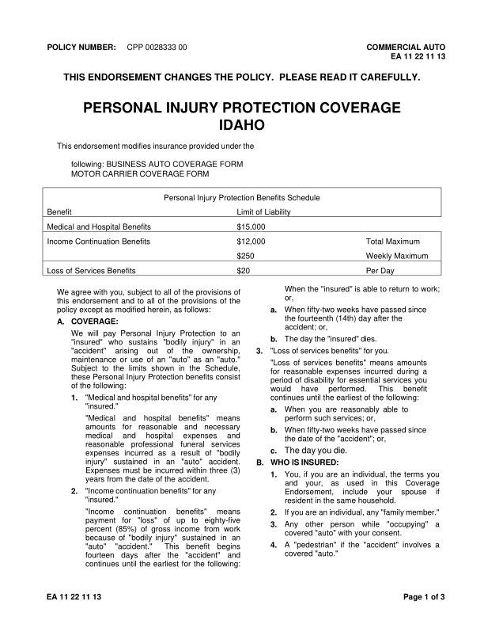
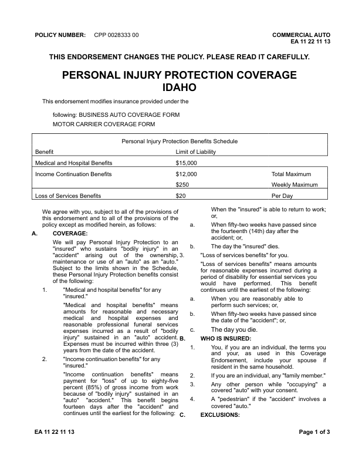
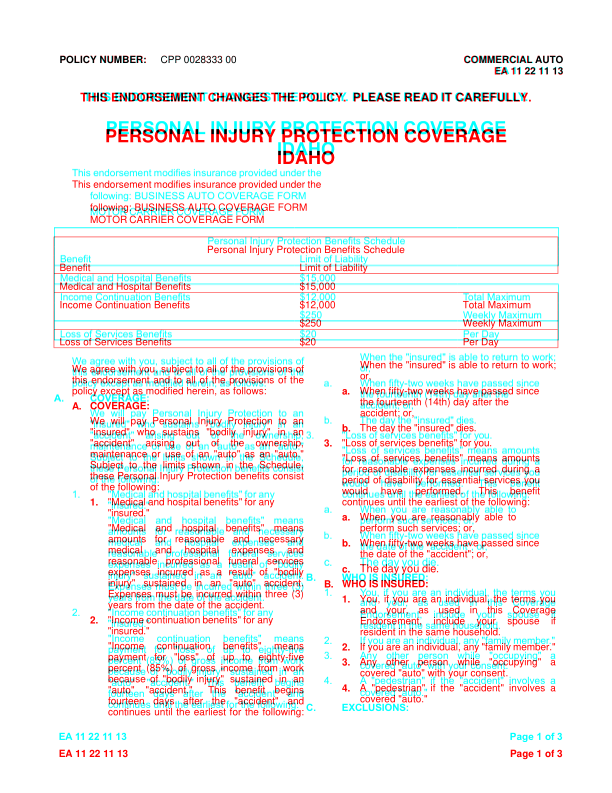
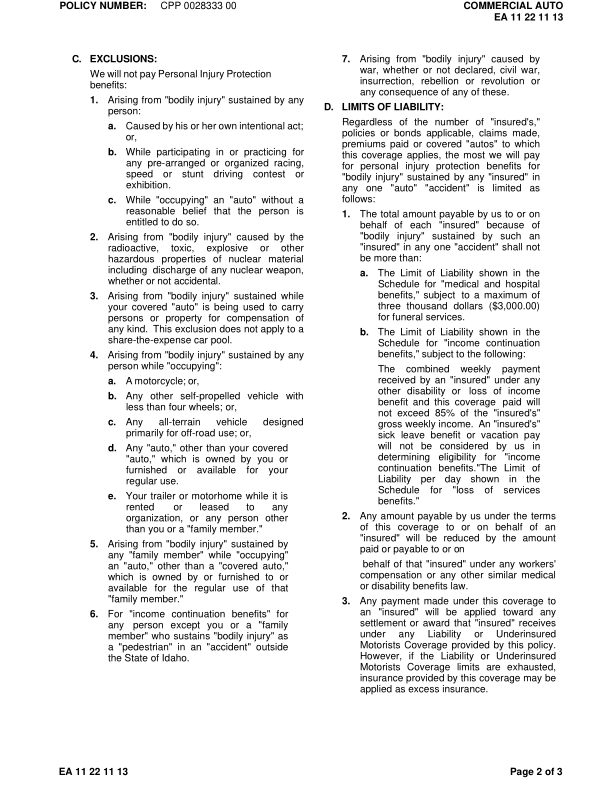
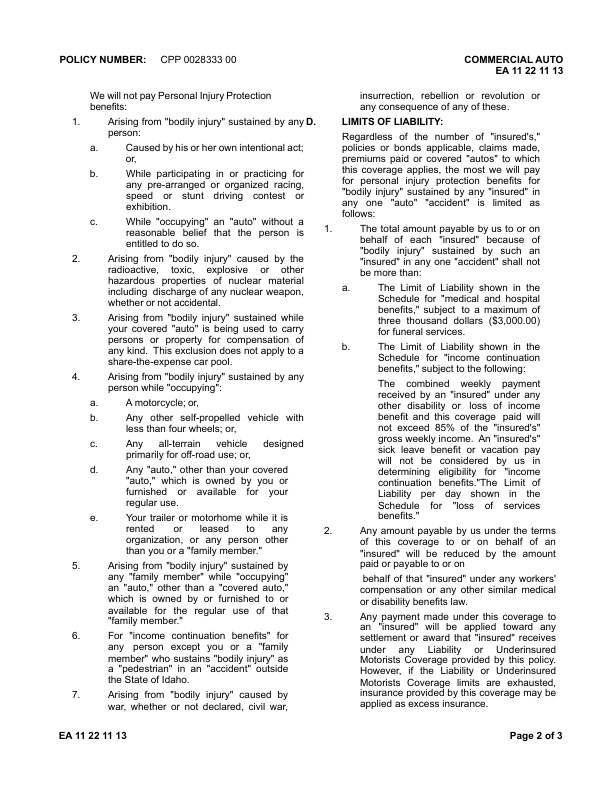
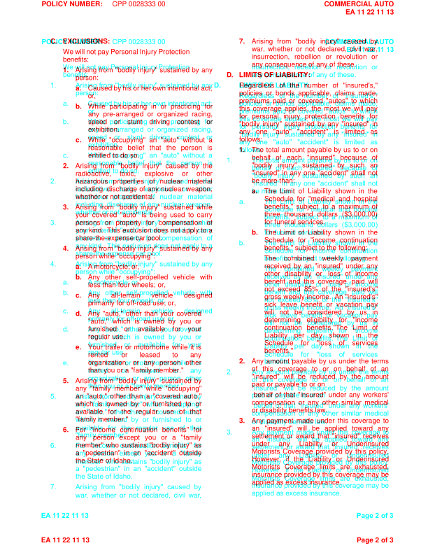
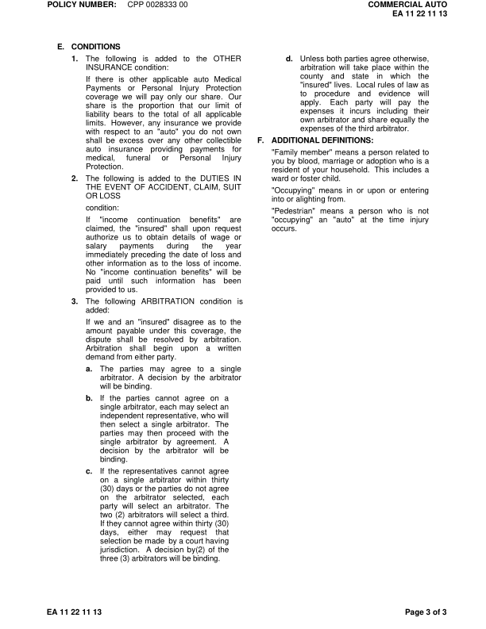
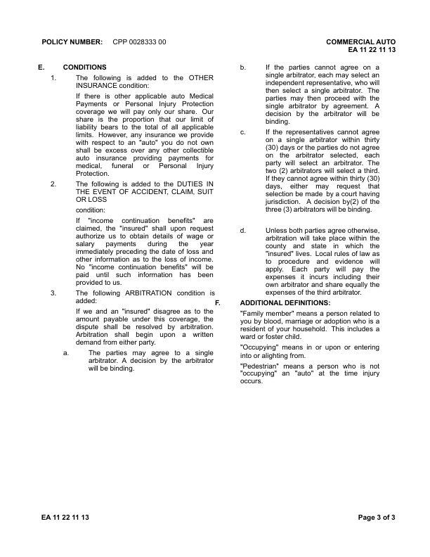
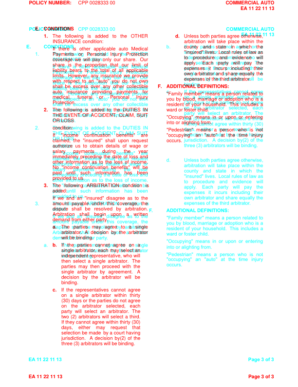

GhostDraft (TST) — page 4

HTML designer — page 4
no page
Overlay
page count differs
EA1122_1113: DIFFERENT score 99.9% pages golden 3 html 3 (pages with text) words golden 1499 html 1499 missing 2 extra 2 MISSING (in the GhostDraft golden, not in the HTML render) [FOR] <= auto insurance providing payments for [OR] <= (30) days or the parties do not agree EXTRA (in the HTML render, not in the GhostDraft golden) [ANY] <= shall be excess over any other collectible [ARBITRATION] <= Arbitration shall begin upon a written golden C:\src\fact-docgen\src\Moe.Commercial.Documents.Generation.Integration.Tests\TestData\Snapshots\EA1122_1113\GoldenSnapshot.txt template C:\src\fact-poc\output\ghostdraft\batch\EA1122-1113.json serverxml C:\src\fact-poc\output\ghostdraft\serverxml\EA1122_1113\ServerXml.xml



moved THIS (+3.5, -0.3)pt moved ENDORSEMENT (+3.5, -0.3)pt moved CHANGES (+3.5, -0.3)pt moved THE (+3.5, -0.3)pt moved POLICY. (+3.5, -0.3)pt moved PERSONAL (+0.7, -8.9)pt moved INJURY (+0.4, -8.9)pt moved PROTECTION (-0.6, -8.9)pt moved COVERAGE (-0.6, -8.9)pt moved IDAHO (-0.0, -8.7)pt moved This (+0.0, -12.4)pt moved endorsement (+0.0, -12.4)pt moved modifies (+0.0, -12.4)pt moved insurance (+0.1, -12.4)pt moved provided (+0.0, -12.4)pt moved under (+0.1, -12.4)pt moved the (+0.1, -12.4)pt moved following: (-0.0, -11.9)pt moved BUSINESS (-0.0, -11.9)pt moved AUTO (-0.6, -11.9)pt moved COVERAGE (-0.8, -11.9)pt moved FORM (-0.8, -11.9)pt moved MOTOR (-0.0, -8.6)pt moved CARRIER (-0.1, -8.6)pt moved COVERAGE (-0.1, -8.6)pt moved FORM (-0.1, -8.6)pt moved Personal (+0.4, -9.2)pt moved Injury (+0.4, -9.2)pt moved Protection (+0.4, -9.2)pt moved Benefits (+0.4, -9.2)pt moved Schedule (+0.4, -9.2)pt moved Benefit (+0.5, -9.3)pt moved Limit (+0.4, -9.3)pt moved of (+0.4, -9.3)pt moved Liability (+0.4, -9.3)pt moved Medical (+0.5, -8.5)pt moved and (+0.5, -8.5)pt moved Hospital (+0.5, -8.5)pt moved Benefits (+0.5, -8.5)pt moved $15,000 (+0.4, -8.5)pt moved Income (+0.5, -8.4)pt moved Continuation (+0.5, -8.4)pt moved Benefits (+0.5, -8.4)pt moved $12,000 (+0.4, -8.4)pt moved Total (+0.4, -8.4)pt moved Maximum (-0.7, -8.4)pt moved $250 (+0.4, -8.6)pt moved Weekly (+0.4, -8.6)pt moved Maximum (+0.2, -8.6)pt moved Loss (+0.5, -8.4)pt moved of (+0.5, -8.4)pt moved Services (+0.5, -8.4)pt moved Benefits (+0.5, -8.4)pt moved $20 (+0.4, -8.4)pt moved Per (+0.4, -8.4)pt moved Day (+0.4, -8.4)pt moved When (+0.0, -8.4)pt moved the (+0.1, -8.4)pt moved "insured" (+0.0, -8.4)pt moved is (+0.0, -8.4)pt moved able (+0.1, -8.4)pt moved to (+0.0, -8.4)pt moved return (+0.1, -8.4)pt moved to (+0.0, -8.4)pt moved work; (+0.0, -8.4)pt moved We (+0.0, -8.6)pt moved agree (-0.2, -8.6)pt moved with (-0.1, -8.6)pt moved you, (-0.0, -8.6)pt moved subject (-0.1, -8.6)pt moved to (-0.1, -8.6)pt moved all (+0.0, -8.6)pt moved of (-0.0, -8.6)pt moved the (+0.1, -8.6)pt moved provisions (+0.0, -8.6)pt moved of (+0.1, -8.6)pt moved or, (+0.0, -8.9)pt moved this (+0.0, -8.4)pt moved endorsement (-0.0, -8.4)pt moved and (+0.1, -8.4)pt moved to (+0.1, -8.4)pt moved all (+0.1, -8.4)pt moved of (+0.0, -8.4)pt moved the (+0.0, -8.4)pt moved provisions (+0.1, -8.4)pt moved of (+0.0, -8.4)pt moved the (+0.1, -8.4)pt moved policy (+0.0, -8.9)pt moved except (-0.0, -8.9)pt moved as (-0.0, -8.9)pt moved modified (-0.0, -8.9)pt moved herein, (-0.0, -8.9)pt moved as (-0.0, -8.9)pt moved follows: (-0.0, -8.9)pt moved a. (-18.1, -8.9)pt moved When (+0.1, -8.9)pt moved fifty-two (+0.2, -8.9)pt moved weeks (+0.2, -8.9)pt moved have (+0.2, -8.9)pt moved passed (+0.1, -8.9)pt moved since (+0.2, -8.9)pt moved the (+0.0, -8.6)pt moved fourteenth (+0.0, -8.6)pt moved (14th) (+0.0, -8.6)pt moved day (+0.0, -8.6)pt moved after (+0.0, -8.6)pt moved the (+0.0, -8.6)pt moved A. (-17.9, -8.9)pt moved COVERAGE: (-0.0, -8.9)pt moved accident; (+0.0, -8.4)pt moved or, (+0.0, -8.4)pt moved We (-0.0, -8.9)pt moved will (-0.1, -8.9)pt moved pay (-0.1, -8.9)pt moved Personal (-0.1, -8.9)pt moved Injury (-0.0, -8.9)pt moved Protection (+0.0, -8.9)pt moved to (+0.0, -8.9)pt moved an (+0.0, -8.9)pt moved b. (-17.9, -8.4)pt moved The (+0.0, -8.4)pt moved day (+0.1, -8.4)pt moved the (+0.0, -8.4)pt moved "insured" (+0.1, -8.4)pt moved dies. (+0.0, -8.4)pt moved "insured" (-0.0, -8.6)pt moved who (-0.0, -8.6)pt moved sustains (+0.0, -8.6)pt moved "bodily (+0.0, -8.6)pt moved injury" (+0.1, -8.6)pt moved in (+0.1, -8.6)pt moved an (+0.0, -8.6)pt moved "accident" (-0.0, -8.4)pt moved arising (+0.0, -8.4)pt moved out (+0.1, -8.4)pt moved of (+0.0, -8.4)pt moved the (+0.1, -8.4)pt moved ownership, (+0.1, -8.4)pt moved 3. (-17.9, -8.4)pt moved "Loss (+0.0, -8.4)pt moved of (-0.0, -8.4)pt moved services (+0.0, -8.4)pt moved benefits" (+0.0, -8.4)pt moved for (+0.1, -8.4)pt moved you. (+0.1, -8.4)pt moved maintenance (-0.0, -8.9)pt moved or (-0.0, -8.9)pt moved use (-0.0, -8.9)pt moved of (+0.0, -8.9)pt moved an (-0.0, -8.9)pt moved "auto" (+0.0, -8.9)pt moved as (-0.0, -8.9)pt moved an (+0.0, -8.9)pt moved "auto." (+0.0, -8.9)pt moved "Loss (+0.0, -8.4)pt moved of (+0.0, -8.4)pt moved services (+0.1, -8.4)pt moved benefits" (+0.1, -8.4)pt moved means (+0.0, -8.4)pt moved amounts (+0.1, -8.4)pt moved Subject (-0.0, -8.6)pt moved to (+0.0, -8.6)pt moved the (-0.0, -8.6)pt moved limits (+0.0, -8.6)pt moved shown (+0.0, -8.6)pt moved in (+0.1, -8.6)pt moved the (+0.1, -8.6)pt moved Schedule, (+0.1, -8.6)pt moved for (+0.0, -8.9)pt moved reasonable (+0.0, -8.9)pt moved expenses (+0.1, -8.9)pt moved incurred (+0.1, -8.9)pt moved during (+0.1, -8.9)pt moved a (+0.0, -8.9)pt moved these (-0.0, -8.4)pt moved Personal (+0.1, -8.4)pt moved Injury (+0.0, -8.4)pt moved Protection (+0.0, -8.4)pt moved benefits (+0.0, -8.4)pt moved consist (+0.0, -8.4)pt moved period (+0.0, -8.6)pt moved of (+0.0, -8.6)pt moved disability (+0.1, -8.6)pt moved for (+0.0, -8.6)pt moved essential (+0.0, -8.6)pt moved services (+0.1, -8.6)pt moved you (+0.1, -8.6)pt moved of (-0.0, -8.9)pt moved the (-0.0, -8.9)pt moved following: (-0.0, -8.9)pt moved would (+0.0, -8.4)pt moved have (+0.0, -8.4)pt moved performed. (+0.1, -8.4)pt moved This (+0.0, -8.4)pt moved benefit (+0.1, -8.4)pt moved 1. (-17.9, -8.9)pt moved "Medical (+0.0, -8.9)pt moved and (+0.0, -8.9)pt moved hospital (+0.1, -8.9)pt moved benefits" (+0.1, -8.9)pt moved for (+0.1, -8.9)pt moved any (+0.1, -8.9)pt moved continues (+0.0, -8.9)pt moved until (+0.0, -8.9)pt moved the (+0.0, -8.9)pt moved earliest (+0.0, -8.9)pt moved of (+0.0, -8.9)pt moved the (+0.0, -8.9)pt moved following: (+0.0, -8.9)pt moved "insured." (+0.0, -8.6)pt moved a. (-18.0, -8.9)pt moved When (+0.1, -8.9)pt moved you (+0.1, -8.9)pt moved are (+0.1, -8.9)pt moved reasonably (+0.2, -8.9)pt moved able (+0.2, -8.9)pt moved to (+0.1, -8.9)pt moved "Medical (+0.0, -8.6)pt moved and (+0.1, -8.6)pt moved hospital (+0.0, -8.6)pt moved benefits" (+0.0, -8.6)pt moved means (+0.0, -8.6)pt moved perform (+0.0, -8.6)pt moved such (+0.0, -8.6)pt moved services; (+0.0, -8.6)pt moved or, (+0.0, -8.6)pt moved amounts (+0.0, -8.4)pt moved for (+0.0, -8.4)pt moved reasonable (+0.0, -8.4)pt moved and (+0.1, -8.4)pt moved necessary (+0.1, -8.4)pt moved b. (-18.1, -8.7)pt moved When (+0.1, -8.6)pt moved fifty-two (+0.2, -8.6)pt moved weeks (+0.2, -8.6)pt moved have (+0.2, -8.6)pt moved passed (+0.1, -8.6)pt moved since (+0.2, -8.6)pt moved medical (+0.0, -8.9)pt moved and (+0.0, -8.9)pt moved hospital (+0.1, -8.9)pt moved expenses (+0.1, -8.9)pt moved and (+0.1, -8.9)pt moved the (+0.0, -8.4)pt moved date (+0.0, -8.4)pt moved of (+0.0, -8.4)pt moved the (+0.0, -8.4)pt moved "accident"; (+0.0, -8.4)pt moved or, (+0.0, -8.4)pt moved reasonable (+0.0, -8.6)pt moved professional (+0.1, -8.6)pt moved funeral (+0.0, -8.6)pt moved services (+0.1, -8.6)pt moved c. (-17.9, -7.7)pt moved The (+0.0, -7.6)pt moved day (+0.1, -7.6)pt moved you (+0.0, -7.6)pt moved die. (+0.1, -7.6)pt moved expenses (+0.0, -8.4)pt moved incurred (+0.0, -8.4)pt moved as (-0.0, -8.4)pt moved a (+0.0, -8.4)pt moved result (+0.1, -8.4)pt moved of (+0.0, -8.4)pt moved "bodily (+0.1, -8.4)pt moved injury" (+0.0, -8.9)pt moved sustained (+0.0, -8.9)pt moved in (+0.1, -8.9)pt moved an (+0.1, -8.9)pt moved "auto" (+0.0, -8.9)pt moved accident. (+0.0, -8.9)pt moved B. (-17.9, -7.7)pt moved WHO (-0.0, -7.6)pt moved IS (+0.0, -7.6)pt moved INSURED: (+0.1, -7.6)pt moved Expenses (+0.0, -8.6)pt moved must (+0.0, -8.6)pt moved be (+0.0, -8.6)pt moved incurred (-0.0, -8.6)pt moved within (+0.1, -8.6)pt moved three (+0.1, -8.6)pt moved (3) (+0.0, -8.6)pt moved 1. (-18.0, -7.7)pt moved You, (+0.1, -7.6)pt moved if (-0.6, -7.6)pt moved you (-0.6, -7.6)pt moved are (-0.5, -7.6)pt moved an (-0.4, -7.6)pt moved individual, (-0.3, -7.6)pt moved the (-0.2, -7.6)pt moved terms (-0.1, -7.6)pt moved you (+0.1, -7.6)pt moved years (+0.0, -8.4)pt moved from (+0.0, -8.4)pt moved the (+0.0, -8.4)pt moved date (+0.0, -8.4)pt moved of (+0.0, -8.4)pt moved the (+0.0, -8.4)pt moved accident. (+0.0, -8.4)pt moved and (+0.0, -8.1)pt moved your, (+0.1, -8.1)pt moved as (-0.3, -8.1)pt moved used (-0.2, -8.1)pt moved in (-0.1, -8.1)pt moved this (+0.0, -8.1)pt moved Coverage (+0.1, -8.1)pt moved 2. (-17.9, -8.4)pt moved "Income (+0.0, -8.4)pt moved continuation (+0.0, -8.4)pt moved benefits" (+0.1, -8.4)pt moved for (+0.1, -8.4)pt moved any (+0.0, -8.4)pt moved Endorsement, (+0.0, -7.9)pt moved include (+0.0, -7.9)pt moved your (+0.0, -7.9)pt moved spouse (+0.0, -7.9)pt moved if (+0.0, -7.9)pt moved "insured." (+0.0, -8.9)pt moved resident (+0.0, -7.6)pt moved in (+0.0, -7.6)pt moved the (+0.0, -7.6)pt moved same (+0.0, -7.6)pt moved household. (+0.1, -7.6)pt moved "Income (+0.0, -8.9)pt moved continuation (+0.0, -8.9)pt moved benefits" (+0.1, -8.9)pt moved means (+0.1, -8.9)pt moved 2. (-17.9, -7.7)pt moved If (+0.0, -7.6)pt moved you (+0.0, -7.6)pt moved are (+0.1, -7.6)pt moved an (+0.1, -7.6)pt moved individual, (+0.0, -7.6)pt moved any (+0.1, -7.6)pt moved "family (+0.1, -7.6)pt moved member." (+0.1, -7.6)pt moved payment (+0.0, -8.6)pt moved for (+0.1, -8.6)pt moved "loss" (+0.0, -8.6)pt moved of (+0.1, -8.6)pt moved up (+0.0, -8.6)pt moved to (+0.0, -8.6)pt moved eighty-five (+0.0, -8.6)pt moved 3. (-18.0, -7.7)pt moved Any (+0.1, -7.6)pt moved other (+0.1, -7.6)pt moved person (+0.1, -7.6)pt moved while (+0.0, -7.6)pt moved "occupying" (+0.1, -7.6)pt moved a (+0.1, -7.6)pt moved percent (+0.0, -8.4)pt moved (85%) (-0.0, -8.4)pt moved of (+0.1, -8.4)pt moved gross (+0.0, -8.4)pt moved income (+0.1, -8.4)pt moved from (+0.1, -8.4)pt moved work (+0.1, -8.4)pt moved covered (+0.0, -8.1)pt moved "auto" (+0.0, -8.1)pt moved with (+0.0, -8.1)pt moved your (+0.0, -8.1)pt moved consent. (+0.0, -8.1)pt moved because (+0.0, -8.9)pt moved of (+0.0, -8.9)pt moved "bodily (+0.1, -8.9)pt moved injury" (+0.0, -8.9)pt moved sustained (+0.0, -8.9)pt moved in (+0.1, -8.9)pt moved an (+0.1, -8.9)pt moved 4. (-18.0, -8.2)pt moved A (+0.1, -8.1)pt moved "pedestrian" (-0.4, -8.1)pt moved if (-0.3, -8.1)pt moved the (-0.2, -8.1)pt moved "accident" (-0.1, -8.1)pt moved involves (-0.1, -8.1)pt moved a (+0.0, -8.1)pt moved fourteen (+0.0, -8.4)pt moved days (+0.0, -8.4)pt moved after (+0.0, -8.4)pt moved the (+0.0, -8.4)pt moved "accident" (+0.1, -8.4)pt moved and (+0.0, -8.4)pt moved continues (+0.0, -8.9)pt moved until (-0.8, -8.9)pt moved the (-1.7, -8.9)pt moved earliest (-2.5, -8.9)pt moved for (-3.3, -8.9)pt moved the (-4.1, -8.9)pt moved following: (-5.0, -8.9)pt moved EA (-0.0, -18.2)pt moved 11 (-0.4, -18.2)pt moved 22 (-0.9, -18.2)pt moved 11 (-0.9, -18.2)pt moved 13 (-1.5, -18.2)pt moved Page (-0.0, -18.2)pt moved 1 (+0.1, -18.2)pt moved of (+0.0, -18.2)pt moved 3 (+0.0, -18.2)pt size a. 9.9 -> 10.0pt size b. 9.9 -> 10.0pt size 3. 9.9 -> 10.0pt size 1. 9.9 -> 10.0pt size a. 9.9 -> 10.0pt size b. 9.9 -> 10.0pt size c. 9.9 -> 11.0pt size 1. 9.9 -> 10.0pt size 2. 9.9 -> 10.0pt size 2. 9.9 -> 10.0pt size 3. 9.9 -> 10.0pt size 4. 9.9 -> 10.0pt missing h rule at 237.0 (54.2-557.7) missing h rule at 273.8 (54.2-557.7) missing h rule at 292.5 (54.2-557.7) missing h rule at 329.3 (54.2-557.7) missing h rule at 347.9 (54.2-557.7) missing v rule at 54.0 (237.3-347.7) missing v rule at 558.0 (237.3-273.6) missing v rule at 558.0 (292.7-347.7) extra h rule at 227.6 (54.0-558.8) extra h rule at 265.1 (54.0-558.8) extra h rule at 283.9 (54.0-558.8) extra h rule at 320.6 (54.0-558.8) extra h rule at 339.4 (54.0-558.8) extra v rule at 54.4 (227.2-339.8) extra v rule at 558.4 (227.2-265.5) extra v rule at 558.4 (284.2-339.8)



moved POLICY (-0.0, +54.0)pt moved NUMBER: (-0.2, +54.0)pt moved CPP (-0.0, +54.0)pt moved 0028333 (-0.2, +54.0)pt moved 00 (-0.2, +54.0)pt moved COMMERCIAL (+0.8, +54.0)pt moved AUTO (+0.2, +54.0)pt moved EA (+1.5, +53.7)pt moved 11 (+1.1, +53.7)pt moved 22 (+0.6, +53.7)pt moved 11 (+0.6, +53.7)pt moved 13 (+0.0, +53.7)pt moved We (-0.0, +21.8)pt moved will (-0.2, +21.8)pt moved not (-0.1, +21.8)pt moved pay (-0.2, +21.8)pt moved Personal (-0.1, +21.8)pt moved Injury (-0.1, +21.8)pt moved Protection (-0.1, +21.8)pt moved insurrection, (+0.0, +14.8)pt moved rebellion (+0.1, +14.8)pt moved or (+0.1, +14.8)pt moved revolution (+0.0, +14.8)pt moved or (+0.1, +14.8)pt moved benefits: (-0.0, +22.0)pt moved any (+0.0, +15.1)pt moved consequence (+0.0, +15.1)pt moved of (+0.0, +15.1)pt moved any (+0.0, +15.1)pt moved of (+0.0, +15.1)pt moved these. (+0.0, +15.1)pt moved 1. (-18.0, +22.0)pt moved Arising (+0.1, +22.1)pt moved from (+0.2, +22.1)pt moved "bodily (+0.1, +22.1)pt moved injury" (+0.1, +22.1)pt moved sustained (+0.1, +22.1)pt moved by (+0.1, +22.1)pt moved any (+0.1, +22.1)pt moved D. (-17.9, +15.0)pt moved LIMITS (+0.0, +15.1)pt moved OF (-0.0, +15.1)pt moved LIABILITY: (+0.1, +15.1)pt moved person: (+0.0, +21.6)pt moved Regardless (+0.0, +15.1)pt moved of (+0.0, +15.1)pt moved the (+0.0, +15.1)pt moved number (+0.0, +15.1)pt moved of (+0.0, +15.1)pt moved "insured's," (+0.1, +15.1)pt moved a. (-17.9, +21.5)pt moved Caused (+0.0, +21.6)pt moved by (+0.0, +21.6)pt moved his (+0.0, +21.6)pt moved or (+0.1, +21.6)pt moved her (+0.0, +21.6)pt moved own (+0.1, +21.6)pt moved intentional (+0.1, +21.6)pt moved act; (+0.1, +21.6)pt moved policies (+0.0, +14.6)pt moved or (+0.0, +14.6)pt moved bonds (+0.1, +14.6)pt moved applicable, (+0.0, +14.6)pt moved claims (+0.1, +14.6)pt moved made, (+0.1, +14.6)pt moved or, (+0.0, +21.8)pt moved premiums (+0.0, +14.8)pt moved paid (+0.1, +14.8)pt moved or (+0.0, +14.8)pt moved covered (+0.0, +14.8)pt moved "autos" (+0.0, +14.8)pt moved to (+0.0, +14.8)pt moved which (+0.1, +14.8)pt moved this (+0.0, +15.1)pt moved coverage (+0.1, +15.1)pt moved applies, (+0.0, +15.1)pt moved the (+0.1, +15.1)pt moved most (+0.0, +15.1)pt moved we (+0.1, +15.1)pt moved will (+0.1, +15.1)pt moved pay (+0.0, +15.1)pt moved or (+19.0, +10.8)pt moved for (+0.0, +14.6)pt moved personal (+0.0, +14.6)pt moved injury (+0.0, +14.6)pt moved protection (+0.0, +14.6)pt moved benefits (+0.1, +14.6)pt moved for (+0.1, +14.6)pt moved or (+47.5, +11.1)pt moved "bodily (+0.0, +14.8)pt moved injury" (+0.0, +14.8)pt moved sustained (+0.1, +14.8)pt moved by (+0.0, +14.8)pt moved any (+0.0, +14.8)pt moved "insured" (+0.1, +14.8)pt moved in (+0.1, +14.8)pt moved any (+0.0, +15.1)pt moved one (+0.0, +15.1)pt moved "auto" (+0.1, +15.1)pt moved "accident" (+0.1, +15.1)pt moved is (+0.1, +15.1)pt moved limited (+0.0, +15.1)pt moved as (+0.1, +15.1)pt moved follows: (+0.0, +14.6)pt moved c. (-18.0, +21.8)pt moved While (+0.1, +21.8)pt moved "occupying" (+0.1, +21.8)pt moved an (+0.1, +21.8)pt moved "auto" (+0.1, +21.8)pt moved without (+0.1, +21.8)pt moved a (+0.0, +21.8)pt moved 1. (-18.0, +14.5)pt moved The (+0.1, +14.6)pt moved total (+0.1, +14.6)pt moved amount (+0.1, +14.6)pt moved payable (+0.1, +14.6)pt moved by (+0.1, +14.6)pt moved us (+0.1, +14.6)pt moved to (+0.1, +14.6)pt moved or (+0.0, +14.6)pt moved on (+0.0, +14.6)pt moved behalf (+0.0, +14.8)pt moved of (+0.1, +14.8)pt moved each (+0.1, +14.8)pt moved "insured" (+0.1, +14.8)pt moved because (+0.1, +14.8)pt moved of (+0.0, +14.8)pt moved 2. (-18.0, +21.5)pt moved Arising (+0.1, +21.6)pt moved from (+0.2, +21.6)pt moved "bodily (+0.1, +21.6)pt moved injury" (+0.1, +21.6)pt moved caused (+0.0, +21.6)pt moved by (+0.0, +21.6)pt moved the (+0.1, +21.6)pt moved "insured" (+0.0, +14.6)pt moved in (+0.0, +14.6)pt moved any (+0.1, +14.6)pt moved one (+0.1, +14.6)pt moved "accident" (+0.0, +14.6)pt moved shall (+0.0, +14.6)pt moved not (+0.1, +14.6)pt moved radioactive, (+0.0, +21.8)pt moved toxic, (+0.1, +21.8)pt moved explosive (+0.0, +21.8)pt moved or (+0.1, +21.8)pt moved other (+0.1, +21.8)pt moved hazardous (+0.0, +22.1)pt moved properties (+0.0, +22.1)pt moved of (+0.0, +22.1)pt moved nuclear (+0.1, +22.1)pt moved material (+0.1, +22.1)pt moved a. (-18.0, +14.8)pt moved The (+0.1, +14.8)pt moved Limit (+0.1, +14.8)pt moved of (+0.1, +14.8)pt moved Liability (+0.1, +14.8)pt moved shown (+0.0, +14.8)pt moved in (+0.1, +14.8)pt moved the (+0.1, +14.8)pt moved Schedule (+0.0, +15.1)pt moved for (+0.0, +15.1)pt moved "medical (+0.1, +15.1)pt moved and (+0.1, +15.1)pt moved hospital (+0.0, +15.1)pt moved benefits," (+0.0, +14.6)pt moved subject (+0.1, +14.6)pt moved to (+0.1, +14.6)pt moved a (+0.1, +14.6)pt moved maximum (+0.1, +14.6)pt moved of (+0.1, +14.6)pt moved 3. (-18.0, +21.8)pt moved Arising (+0.1, +21.8)pt moved from (+0.1, +21.8)pt moved "bodily (+0.1, +21.8)pt moved injury" (+0.1, +21.8)pt moved sustained (+0.0, +21.8)pt moved while (+0.1, +21.8)pt moved your (+0.0, +22.1)pt moved covered (+0.0, +22.1)pt moved "auto" (+0.0, +22.1)pt moved is (+0.1, +22.1)pt moved being (+0.0, +22.1)pt moved used (+0.0, +22.1)pt moved to (+0.1, +22.1)pt moved carry (+0.0, +22.1)pt moved persons (+0.0, +21.6)pt moved or (+0.0, +21.6)pt moved property (+0.0, +21.6)pt moved for (+0.1, +21.6)pt moved compensation (+0.1, +21.6)pt moved of (+0.0, +21.6)pt moved any (+0.0, +21.8)pt moved kind. (+0.0, +21.8)pt moved This (-0.0, +21.8)pt moved exclusion (+0.0, +21.8)pt moved does (+0.0, +21.8)pt moved not (+0.1, +21.8)pt moved apply (+0.1, +21.8)pt moved to (+0.0, +21.8)pt moved a (+0.1, +21.8)pt moved Schedule (+0.0, +14.6)pt moved for (-0.0, +14.6)pt moved "income (+0.0, +14.6)pt moved continuation (+0.0, +14.6)pt moved 4. (-18.0, +22.0)pt moved Arising (+0.1, +22.1)pt moved from (+0.2, +22.1)pt moved "bodily (+0.1, +22.1)pt moved injury" (+0.1, +22.1)pt moved sustained (+0.1, +22.1)pt moved by (+0.1, +22.1)pt moved any (+0.1, +22.1)pt moved The (+0.0, +14.8)pt moved combined (+0.0, +14.8)pt moved weekly (+0.0, +14.8)pt moved payment (+0.1, +14.8)pt moved received (+0.0, +15.1)pt moved by (-0.0, +15.1)pt moved an (+0.0, +15.1)pt moved "insured" (+0.1, +15.1)pt moved under (+0.1, +15.1)pt moved any (+0.1, +15.1)pt moved other (+0.0, +14.6)pt moved disability (+0.0, +14.6)pt moved or (+0.1, +14.6)pt moved loss (+0.1, +14.6)pt moved of (+0.0, +14.6)pt moved income (+0.1, +14.6)pt moved b. (-18.0, +21.5)pt moved Any (+0.1, +21.6)pt moved other (+0.2, +21.6)pt moved self-propelled (+0.1, +21.6)pt moved vehicle (+0.1, +21.6)pt moved with (+0.1, +21.6)pt moved benefit (+0.0, +14.8)pt moved and (-0.0, +14.8)pt moved this (+0.0, +14.8)pt moved coverage (+0.0, +14.8)pt moved paid (+0.1, +14.8)pt moved will (+0.0, +14.8)pt moved less (-0.0, +21.8)pt moved than (-0.0, +21.8)pt moved four (-0.0, +21.8)pt moved wheels; (-0.0, +21.8)pt moved or, (-0.0, +21.8)pt moved not (+0.0, +15.1)pt moved exceed (+0.1, +15.1)pt moved 85% (+0.0, +15.1)pt moved of (+0.1, +15.1)pt moved the (+0.1, +15.1)pt moved "insured's" (+0.1, +15.1)pt moved c. (-18.0, +21.8)pt moved Any (+0.1, +21.8)pt moved all-terrain (+0.1, +21.8)pt moved vehicle (+0.1, +21.8)pt moved designed (+0.1, +21.8)pt moved sick (+0.0, +14.8)pt moved leave (+0.1, +14.8)pt moved benefit (+0.1, +14.8)pt moved or (+0.1, +14.8)pt moved vacation (+0.1, +14.8)pt moved pay (+0.1, +14.8)pt moved d. (-18.0, +22.0)pt moved Any (+0.2, +22.1)pt moved "auto," (+0.2, +22.1)pt moved other (+0.2, +22.1)pt moved than (+0.1, +22.1)pt moved your (+0.1, +22.1)pt moved covered (+0.0, +22.1)pt moved determining (+0.0, +14.6)pt moved eligibility (+0.1, +14.6)pt moved for (+0.1, +14.6)pt moved "income (+0.0, +14.6)pt moved "auto," (+0.0, +21.6)pt moved which (+0.1, +21.6)pt moved is (+0.0, +21.6)pt moved owned (+0.1, +21.6)pt moved by (+0.1, +21.6)pt moved you (+0.1, +21.6)pt moved or (+0.0, +21.6)pt moved continuation (+0.0, +14.8)pt moved benefits."The (+0.1, +14.8)pt moved Limit (+0.0, +14.8)pt moved of (+0.1, +14.8)pt moved furnished (+0.0, +21.8)pt moved or (+0.0, +21.8)pt moved available (+0.1, +21.8)pt moved for (+0.0, +21.8)pt moved your (+0.1, +21.8)pt moved Liability (+0.0, +15.1)pt moved per (+0.1, +15.1)pt moved day (+0.1, +15.1)pt moved shown (+0.1, +15.1)pt moved in (+0.0, +15.1)pt moved the (+0.1, +15.1)pt moved Schedule (+0.0, +15.3)pt moved for (-0.0, +15.3)pt moved "loss (+0.0, +15.3)pt moved of (+0.0, +15.3)pt moved services (+0.0, +15.3)pt moved e. (-18.0, +22.0)pt moved Your (+0.1, +22.1)pt moved trailer (-0.6, +22.1)pt moved or (-0.5, +22.1)pt moved motorhome (-0.3, +22.1)pt moved while (-0.2, +22.1)pt moved it (-0.1, +22.1)pt moved is (+0.0, +22.1)pt moved rented (+0.0, +21.6)pt moved or (+0.0, +21.6)pt moved leased (+0.1, +21.6)pt moved to (+0.1, +21.6)pt moved any (+0.0, +21.6)pt moved 2. (-18.0, +14.8)pt moved Any (+0.1, +14.8)pt moved amount (+0.1, +14.8)pt moved payable (+0.1, +14.8)pt moved by (+0.1, +14.8)pt moved us (+0.1, +14.8)pt moved under (+0.1, +14.8)pt moved the (+0.1, +14.8)pt moved terms (+0.0, +14.8)pt moved organization, (+0.0, +21.8)pt moved or (+0.0, +21.8)pt moved any (-0.0, +21.8)pt moved person (+0.0, +21.8)pt moved other (+0.1, +21.8)pt moved of (+0.0, +15.1)pt moved this (+0.1, +15.1)pt moved coverage (+0.0, +15.1)pt moved to (+0.0, +15.1)pt moved or (+0.0, +15.1)pt moved on (+0.0, +15.1)pt moved behalf (+0.0, +15.1)pt moved of (+0.1, +15.1)pt moved an (+0.1, +15.1)pt moved "insured" (+0.0, +15.3)pt moved will (+0.0, +15.3)pt moved be (+0.1, +15.3)pt moved reduced (+0.0, +15.3)pt moved by (+0.0, +15.3)pt moved the (+0.1, +15.3)pt moved amount (+0.1, +15.3)pt moved 5. (-18.0, +22.0)pt moved Arising (+0.1, +22.1)pt moved from (+0.1, +22.1)pt moved "bodily (+0.1, +22.1)pt moved injury" (+0.1, +22.1)pt moved sustained (+0.1, +22.1)pt moved by (+0.1, +22.1)pt moved any (+0.0, +21.6)pt moved "family (+0.0, +21.6)pt moved member" (+0.1, +21.6)pt moved while (+0.1, +21.6)pt moved "occupying" (+0.0, +21.6)pt moved behalf (-0.0, +14.8)pt moved of (+0.1, +14.8)pt moved that (+0.0, +14.8)pt moved "insured" (+0.1, +14.8)pt moved under (+0.1, +14.8)pt moved any (+0.1, +14.8)pt moved workers' (+0.0, +14.8)pt moved an (+0.0, +21.8)pt moved "auto," (+0.0, +21.8)pt moved other (+0.1, +21.8)pt moved than (+0.0, +21.8)pt moved a (+0.0, +21.8)pt moved "covered (+0.1, +21.8)pt moved auto," (+0.1, +21.8)pt moved which (+0.0, +22.1)pt moved is (+0.1, +22.1)pt moved owned (+0.1, +22.1)pt moved by (+0.1, +22.1)pt moved or (+0.0, +22.1)pt moved furnished (+0.1, +22.1)pt moved to (+0.1, +22.1)pt moved or (+0.1, +22.1)pt moved or (+0.0, +15.3)pt moved disability (+0.0, +15.3)pt moved benefits (+0.0, +15.3)pt moved law. (+0.0, +15.3)pt moved available (+0.0, +22.3)pt moved for (-0.0, +22.3)pt moved the (+0.0, +22.3)pt moved regular (+0.0, +22.3)pt moved use (+0.0, +22.3)pt moved of (+0.0, +22.3)pt moved that (+0.1, +22.3)pt moved 3. (-18.0, +15.3)pt moved Any (+0.1, +15.3)pt moved payment (+0.1, +15.3)pt moved made (+0.1, +15.3)pt moved under (+0.1, +15.3)pt moved this (+0.0, +15.3)pt moved coverage (+0.1, +15.3)pt moved to (+0.1, +15.3)pt moved an (+0.0, +14.8)pt moved "insured" (-0.0, +14.8)pt moved will (+0.0, +14.8)pt moved be (+0.0, +14.8)pt moved applied (+0.1, +14.8)pt moved toward (+0.1, +14.8)pt moved any (+0.1, +14.8)pt moved 6. (-18.0, +21.8)pt moved For (+0.1, +21.8)pt moved "income (+0.1, +21.8)pt moved continuation (+0.1, +21.8)pt moved benefits" (+0.0, +21.8)pt moved for (+0.1, +21.8)pt moved any (+0.0, +22.1)pt moved person (+0.1, +22.1)pt moved except (+0.1, +22.1)pt moved you (+0.0, +22.1)pt moved or (+0.0, +22.1)pt moved a (+0.0, +22.1)pt moved "family (+0.1, +22.1)pt moved under (+0.0, +15.3)pt moved any (+0.0, +15.3)pt moved Liability (+0.1, +15.3)pt moved or (+0.0, +15.3)pt moved Underinsured (+0.1, +15.3)pt moved member" (+0.0, +22.3)pt moved who (+0.1, +22.3)pt moved sustains (-0.0, +22.3)pt moved "bodily (+0.1, +22.3)pt moved injury" (+0.0, +22.3)pt moved as (+0.1, +22.3)pt moved Motorists (+0.0, +14.8)pt moved Coverage (+0.2, +14.8)pt moved provided (+0.3, +14.8)pt moved by (+0.5, +14.8)pt moved this (+0.6, +14.8)pt moved policy. (+0.8, +14.8)pt moved a (+0.0, +21.8)pt moved "pedestrian" (+0.0, +21.8)pt moved in (+0.0, +21.8)pt moved an (+0.0, +21.8)pt moved "accident" (+0.1, +21.8)pt moved outside (+0.0, +21.8)pt moved However, (+0.0, +15.1)pt moved if (-0.4, +15.1)pt moved the (-0.3, +15.1)pt moved Liability (-0.2, +15.1)pt moved or (-0.1, +15.1)pt moved Underinsured (+0.1, +15.1)pt moved Motorists (+0.0, +15.3)pt moved Coverage (+0.0, +15.3)pt moved limits (+0.0, +15.3)pt moved are (+0.0, +15.3)pt moved exhausted, (+0.1, +15.3)pt moved insurance (+0.0, +14.8)pt moved provided (+0.1, +14.8)pt moved by (+0.1, +14.8)pt moved this (+0.0, +14.8)pt moved coverage (+0.0, +14.8)pt moved may (+0.0, +14.8)pt moved be (+0.1, +14.8)pt moved applied (+0.0, +15.1)pt moved as (+0.0, +15.1)pt moved excess (+0.0, +15.1)pt moved insurance. (+0.0, +15.1)pt moved EA (-0.0, -36.2)pt moved 11 (-0.4, -36.2)pt moved 22 (-0.9, -36.2)pt moved 11 (-0.9, -36.2)pt moved 13 (-1.5, -36.2)pt moved Page (-0.0, -36.2)pt moved 2 (+0.1, -36.2)pt moved of (+0.0, -36.2)pt moved 3 (+0.0, -36.2)pt size 1. 9.9 -> 10.0pt size a. 9.9 -> 10.0pt size c. 9.9 -> 10.0pt size 1. 9.9 -> 10.0pt size 2. 9.9 -> 10.0pt size a. 9.9 -> 10.0pt size 3. 9.9 -> 10.0pt size 4. 9.9 -> 10.0pt size b. 9.9 -> 10.0pt size c. 9.9 -> 10.0pt size d. 9.9 -> 10.0pt size e. 9.9 -> 10.0pt size 2. 9.9 -> 10.0pt size 5. 9.9 -> 10.0pt size 3. 9.9 -> 10.0pt size 6. 9.9 -> 10.0pt



moved POLICY (-0.0, +54.0)pt moved NUMBER: (-0.2, +54.0)pt moved CPP (-0.0, +54.0)pt moved 0028333 (-0.2, +54.0)pt moved 00 (-0.2, +54.0)pt moved COMMERCIAL (+0.8, +54.0)pt moved AUTO (+0.2, +54.0)pt moved EA (+1.5, +53.7)pt moved 11 (+1.1, +53.7)pt moved 22 (+0.6, +53.7)pt moved 11 (+0.6, +53.7)pt moved 13 (+0.0, +53.7)pt moved E. (-17.9, +36.8)pt moved CONDITIONS (-0.0, +36.8)pt moved b. (+233.9, -406.2)pt moved If (+252.1, -406.2)pt moved the (+252.1, -406.2)pt moved parties (+252.2, -406.2)pt moved cannot (+252.1, -406.2)pt moved agree (+252.1, -406.2)pt moved on (+252.0, -406.2)pt moved a (+252.1, -406.2)pt moved single (+252.0, -405.9)pt moved arbitrator, (+252.2, -405.9)pt moved each (+251.7, -405.9)pt moved may (+251.8, -405.9)pt moved select (+251.9, -405.9)pt moved an (+252.0, -405.9)pt moved independent (+252.0, -406.4)pt moved representative, (+252.0, -406.4)pt moved who (+252.1, -406.4)pt moved will (+252.1, -406.4)pt moved then (+252.0, -406.2)pt moved select (+252.2, -406.2)pt moved a (+252.3, -406.2)pt moved single (+252.4, -406.2)pt moved arbitrator. (+252.5, -406.2)pt moved The (+252.0, -406.2)pt moved parties (+252.0, -405.9)pt moved may (+252.1, -405.9)pt moved then (+252.1, -405.9)pt moved proceed (+252.0, -405.9)pt moved with (+252.1, -405.9)pt moved the (+252.1, -405.9)pt moved single (+252.0, -406.4)pt moved arbitrator (+252.0, -406.4)pt moved by (+252.0, -406.4)pt moved agreement. (+252.0, -406.4)pt moved A (+252.1, -406.4)pt moved decision (+252.0, -406.2)pt moved by (+252.0, -406.2)pt moved the (+252.0, -406.2)pt moved arbitrator (+252.0, -406.2)pt moved will (+252.0, -406.2)pt moved be (+252.0, -406.2)pt moved binding. (+252.0, -405.9)pt moved c. (+234.0, -406.0)pt moved If (+252.1, -405.9)pt moved the (+252.1, -405.9)pt moved representatives (+252.1, -405.9)pt moved cannot (+252.1, -405.9)pt moved agree (+252.1, -405.9)pt moved on (+252.0, -406.4)pt moved a (+252.0, -406.4)pt moved single (+252.1, -406.4)pt moved arbitrator (+252.1, -406.4)pt moved within (+252.0, -406.4)pt moved thirty (+252.1, -406.4)pt moved (30) (+252.0, -406.2)pt moved days (+252.0, -406.2)pt moved or (+252.1, -406.2)pt moved the (+252.1, -406.2)pt moved parties (+252.0, -406.2)pt moved do (+252.0, -406.2)pt moved not (+252.0, -406.2)pt moved agree (+252.1, -406.2)pt moved on (+252.0, -405.9)pt moved the (+252.1, -405.9)pt moved arbitrator (+252.0, -405.9)pt moved selected, (+252.0, -405.9)pt moved each (+252.1, -405.9)pt moved party (+252.0, -406.4)pt moved will (+252.2, -406.4)pt moved select (+252.4, -406.4)pt moved an (+252.5, -406.4)pt moved arbitrator. (+252.6, -406.4)pt moved The (+252.0, -406.4)pt moved two (+252.0, -406.2)pt moved (2) (+252.0, -406.2)pt moved arbitrators (+252.1, -406.2)pt moved will (+252.0, -406.2)pt moved select (+252.1, -406.2)pt moved a (+252.0, -406.2)pt moved third. (+252.0, -406.2)pt moved If (+252.0, -405.9)pt moved they (+252.1, -405.9)pt moved cannot (+252.1, -405.9)pt moved agree (+252.1, -405.9)pt moved within (+252.1, -405.9)pt moved thirty (+252.0, -405.9)pt moved (30) (+252.1, -405.9)pt moved days, (+252.0, -406.4)pt moved either (+252.1, -406.4)pt moved may (+252.0, -406.4)pt moved request (+252.1, -406.4)pt moved that (+252.1, -406.4)pt moved selection (+252.0, -406.2)pt moved be (+252.0, -406.2)pt moved made (+252.0, -406.2)pt moved by (+252.0, -406.2)pt moved a (+252.1, -406.2)pt moved court (+252.0, -406.2)pt moved having (+252.1, -406.2)pt moved jurisdiction. (+252.0, -405.9)pt moved A (+252.0, -405.9)pt moved decision (+252.0, -405.9)pt moved by(2) (+252.0, -405.9)pt moved of (+252.0, -405.9)pt moved the (+252.1, -405.9)pt moved three (+252.0, -406.4)pt moved (3) (+252.0, -406.4)pt moved arbitrators (+252.0, -406.4)pt moved will (+252.1, -406.4)pt moved be (+252.0, -406.4)pt moved binding. (+252.1, -406.4)pt moved EA (-0.0, -36.2)pt moved 11 (-0.4, -36.2)pt moved 22 (-0.9, -36.2)pt moved 11 (-0.9, -36.2)pt moved 13 (-1.5, -36.2)pt moved Page (-0.0, -36.2)pt moved 3 (+0.1, -36.2)pt moved of (+0.0, -36.2)pt moved 3 (+0.0, -36.2)pt size b. 9.9 -> 10.0pt size c. 9.9 -> 10.0pt